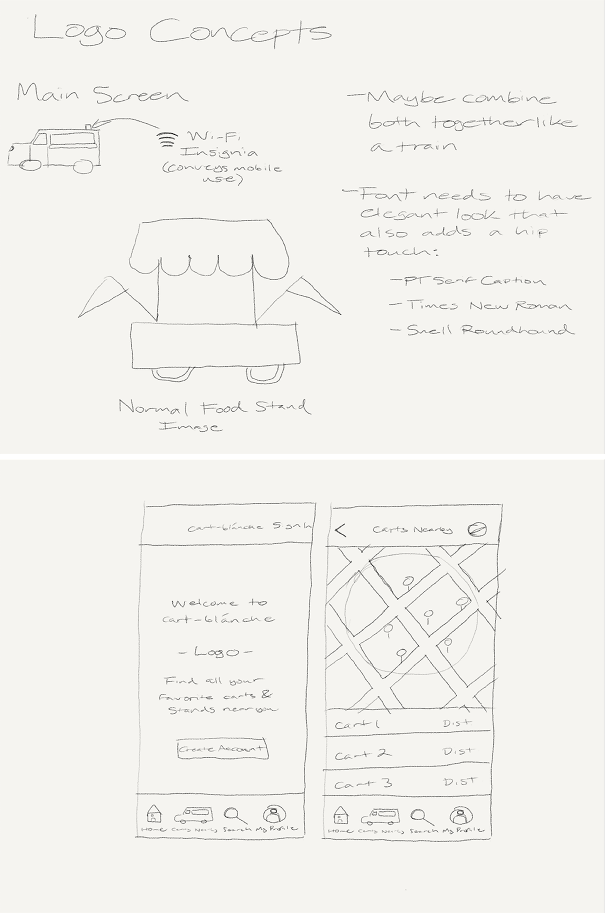
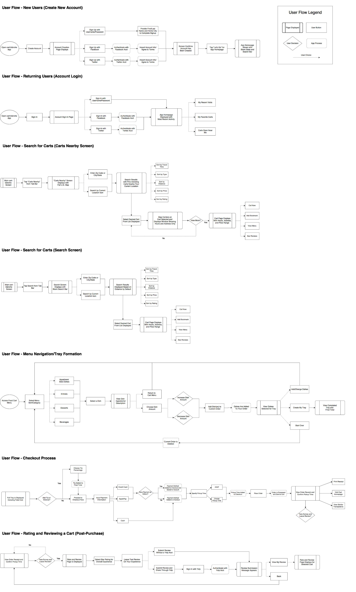
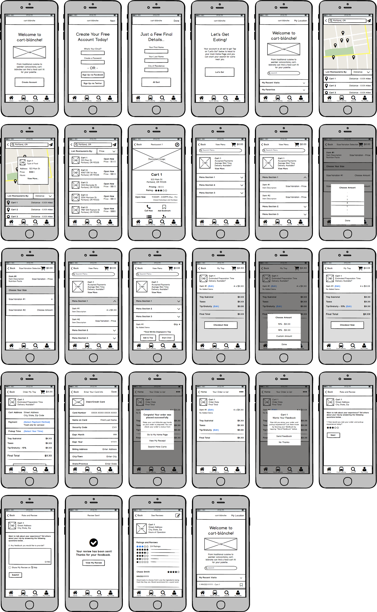

Tired of looking for quicker and easier ways to eat on the go? cart-blánche is a handy way to look for tasty and unique food carts and trucks anywhere and anytime.
Take a LookSummary
In today’s hectic lifestyle, finding a spot to eat at on the go is much easier with the advent of food-carts. But with so many different cuisines out there, and plenty of choices available for quick meals, how do you search for one closer to you in a more organized and streamlined way? This was my goal when creating an elegantly-designed food-cart search app which I like to call cart-blánche.
My Role
- Strategy and Brainstorming
- Full-scale Wireframe Design
- Responsive Prototyping and Testing
- User-Testing and Feedback Collection
Tools Utilized

Background Research
To help cart-blánche take full shape, I decided to begin by researching a bit more on the impact of food carts and ordering from them. Some of the key factors I sought to address included:
- How often do people enjoy going out to eat as opposed to making their own meals?
- How do people prefer ordering meals when ordering out? (At a Restaurant vs. On-The-Go)
- Do some of the meals they order out come from food-carts or mobile food stations?
- Do they search for dining options through the internet in any way?
- Do any of their searches include food-carts or mobile food stations?
- Would they enjoy an easier way to find local carts and create orders they can pick up easier?
Keeping all of this in mind would help better define the best way to help individuals look for different carts near them, including more affordable and highly-recommended choices.
Analysis
Survey Data
After conducting and compiling results of both surveys and personal interviews of 50 individuals who were either surveyed and/or interviewed, I was surprised to see how individuals responded...
- 84% of participants mentioned they enjoy eating out, with about 77% of this cluster noting they prefer both dining on-the-go and a mix of restaurants/fast-food during both lunch and dinner hours during the week.
- 76% live within close proximity to a food-cart or mobile station that serves meals, with an equally close percentage (72%) that stated they have ordered from a food-cart specifically in the last year.
- An eye-opening 14% however, noted that while they’re aware of the presence of food-carts and/or have ordered from one in the last year they are not aware if there are many choices. This indicated that many people may not have a reliable means of checking for nearby options.
- 52% of individuals who were asked about how often they order meals from a food-cart noted that they do so between 2-4 times a week, often spending an average of $25 - $50 a month on meals.
- Taking this into account, 76% noted their enthusiasm to having an app available for locating nearby food-carts and mobile food stations in their area. More importantly, 68% of individuals in this cluster would prefer ordering directly from an app to pick up their meals from a chosen cart.
Competitive Analysis
When looking at similar apps set up to search for food carts, one factor that proved most glaring (looking at how individuals responded to the survey), is that searching is all these apps can do. Keeping that in mind, the following problems became more apparent when viewing both survey feedback, as well as looking at similar apps built for searching food-carts...
- Creating an app-based cart order with one, or multiple dishes they want.
- Arranging an order to be available for pick-up at the cart chosen.
- Providing detailed reviews about their experiences from that cart after picking up an order.
- Ability to save location and search settings through common social-media sources.
Solution
With a more clear idea of the problems I would need to tackle, I had the goal of creating a more modernized app experience that would allow an indvidual a seamless way of searching for, and ordering from local food-carts and stands.
The first step, was to allow a user to search for carts through their local zip code (or city and state). Results would be displayed through the option of either a full aerial map, or detailed list, allowing greater ease and familiarity with searching for locations.
Each cart would feature a fully-themed page providing options available for accessing full drop-down menus to order from, as well as contacting that specific cart for further info, and even reading/creating typed reviews sharing ordering and pickup experiences.
Thanks to this drop-down capability for viewing cart menus, forming a cart would also prove much simpler. In this two-step process, an individual need only select the item they prefer to order, and determining the amount they want to add to their tray, which will add it right onto their tray.
Finally, I insured checkout would be equally streamlined, only requiring one last two-step process to complete an order. By simply verifying your payment, and choosing your order pick-up time (the former of which can be saved alongside location settings for future use), would insure more expedited ordering time.
Process
Rough Sketches
User Flows
 View User FlowsLow-Fidelity Wireframes
After testing these low-fidelity screens with a total of 30 individuals, many enjoyed navigating through the app with it's more streamlined and simplistic look.
Tests returned mostly positive experiences by individuals, with 73% showing a liking to this much similar way of ordering food online for food-carts specifically. An additional 83% loved the way each tab was oriented when moving from menu to checkout, and didn't feel lost trying to locate the options they needed.
Branding
To make cart-blánche stand out on it's own much better, I decided the main colors of the app's layout needed to provide a warmer and more energetic feel when searching for carts. By incorporating more burgundy-style red as the main backdrop, your eyes can be immediately drawn to not only app's name itself, but also locating the option of signing into (or creating) an account.
But to balance this burgundy-like tone at the top of the app window, I kept colors much softer, using only hints of gray and black to point out available options that can be selected on each page, but in a style that appeals to recent changes in recent software updates.
To top it off, I featured colors that are further on the other side of the spectrum to convey call-to-action tabs (such as green for creating an order), as well as a sky-blue for accessing links available. These do not appear in a high frequency, so they do not prove over-powering to the balance established on the main pages.
Final Design

Testing and Feedback
Once I completed my final prototype, I enlisted the aid of Peek User Testing to test my design with 30 individuals. The test itself consisted of two seaprate tests, which included the order creation process, as well as leaving a review with the chosen cart after their order was "picked up."
For both individual tests, the aim was to see how quickly each individual could complete each. Because of the fact this was being done on an iOS-based platform, I set a goal of 60 seconds to serve as the timeframe which would be considered a successful test for an individual navigating the page in a quick and easy fashion.
After testing all 30 individuals, my success rate measured out at 80% (24 out of 30) finishing the test in 60 seconds or less. Out of all 30 individuals tested, the total average completion time measured at 60.68 seconds for the order/checkout process, and 59.82 seconds for the rating/review process.
While I was happy to see that individuals moved through the rating/review process quite easily, I decided to find out more about why average times for ordering/checking out was half a second over my goal. After reviewing individual statements from those that finished over that 60 second goal, the following statements helped clarify what caused this higher average...
“Moving through the menus were easy enough. However, the need to give an initial menu item it's own separate page to select the amount you want is not as necessary. I liked the checkout process though. Having that option of arranging pickup at the cart is definitely awesome. Food-cart lovers will love this.”
- Matt Hanson (Portland, OR)
“Never thought I'd see the day you could order food from a food-cart on the go. Love this layout so it's easy to find what I like near me. Curious though how we get notified of our order being ready though. Maybe include a note about receiving a text-message alert about the order being ready. Aside from that, this is great. Nicely done!”
- Adrian Rivas (Austin, TX)
In addition to these comments, many noted the greater ease of use when given the choice to create a cart-blánche account for future orders, yet not making it required to sign-up to complete an order. Noting the suggestions provided by feedback, I quickly made changes necessary to insure a more quicker order and checkout process for future tests.
Conclusion
As my first full design created for a mobile application, cart-blánche was an eye-opener. As a lover of food-carts myself (growing up in a city thriving off of them), this was an opportunity I thoroughly enjoyed seizing upon. Creating an app that allows you the ability to search for, and order from food-carts directly made me realize the amount of detail that would be needed to this experience more fun for others like me.
It was equally rewarding to see most the users I conducted tests with enjoyed cart-blánche’s many innovative features that prior apps never offered before. From enjoying more simple and quick ordering, to having a more modernized look and feel for each cart’s featured, these are just some of many things that could revolutionize food-cart culture even more.
And as a designer, modern simplicity no project should ever be without. I very much enjoyed working on this design.